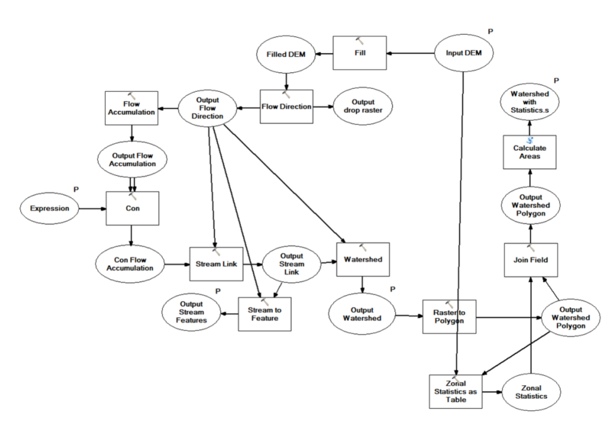
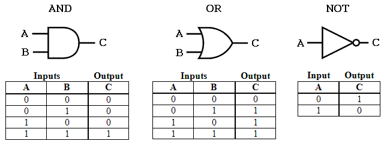
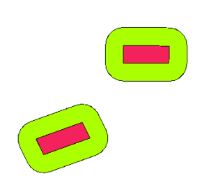
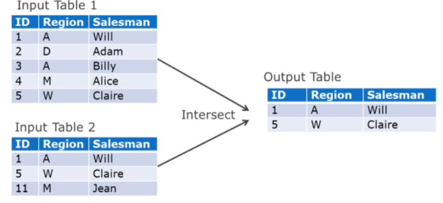

Análisis Espaciales con Datos Vectoriales
Introducción a la Tecnología de Información Geográfica (IMSD1020)
2024-05-13
¿Qué es un análisis geoespacial?
Es la aplicación de operaciones para manipular o calcular coordenadas y/o atributos de datos relacionados.
Aplicados para resolver problemas como:
Ruta de buses
Zonas de inundación
Determinación de un sitio adecuado
El análisis espacial utiliza
operaciones espacialespara manipular y calcular.AEs: se utilizará para referirse a análisis espacial por el resto de esta clase.
Ejemplo de AEs
Delimitación de cuenca.
Input, Operación y Output
AEsgeneralmente usa datos de 1 o más capas para crear un output (salida)- Uno a uno
- Uno a muchos
- Muchos a uno
- Muchos a muchos
El output no necesariamente debe ser espacial
Estadísticas
Reporte/Informe
Técnicas de análisis geoespacial
Selección
Buffering
Disolver (dissolve)
Operaciones de superposición (overlay)
Clasificación
Operaciones con tablas
1. Selección
1. Selección
Las
operaciones de selecciónidentifican objetos que cumplen ciertas condiciones.Las condiciones de selección pueden ser
espacialesono espacialesSelección basada en atributos (no espacial)
Selección basada en posición (espacial)
Selección no espacial
Consulta de tabla de atributos
Consulta de tabla es una operación SIG no espacial muy común.
Selecciona una submuestra de los registros basado en valores específicos de atributos.
Utiliza
operaciones algebraicasyoperadores booleanos
Selección no espacial
Operaciones algebraicas
Operaciones:
Menor que
<Mayor que
>Igual que
=No igual a
<>
mayor que y menor que no se pueden aplicar a atributos nominales
- ¿Por qué?
se pueden aplicar solos o en combinación
Selección no espacial
Operaciones algebraicas
Ejemplo
Datos de riego censo agropecuario 2007 (IDE Minagri). Descargar datos acá
Superficie de riego mayor a 1000 ha
- Expresión: “sup_riego” >1000
Superficie de riego goteo menor a 10 ha
- Expresión: “goteo” <10
Todos los distritos que se encuentran en la región Metropolitana
- Expresión: “nom_reg” = ‘Región Metropolitana de Santiago’
Todos los distritos que NO se encuentran en la región Metropolitana
- Espresión: “nom_reg” <> ‘Región Metropolitana de Santiago’
Selección no espacial
Algebra booleana (lógicos)
Utiliza condiciones
OR,ANDoNOTLa evaluación se hace asignando a la salida un valor de verdadero (TRUE) o falso (FALSE), a cada condición.
El orden de las operaciones no importa
Operadores y tablas de verdad
¿Cuál es el resultado?
NOT (F)
V AND V
F OR NOT(V)
V OR (F OR (V AND V))
(V AND V) OR F AND (NOT(F) AND V)
¿Cuál es el resultado?
NOT (F) -> V
V AND V -> V
F OR NOT(V) -> F
V OR (F OR (V AND V)) -> V
(V AND V) OR F AND (NOT(F) AND V) -> V
Ejemplo
Riego Censo agropecuario 2007. Descargar datos acá
Superificie de riego por goteo distinta de 0 y que perteneza a la región de O’Higgins
- (“goteo” <>0) AND (“nom_reg” = ‘Región del Libertador General Bernardo O’‘Higgins’ )
¿Qué pasa si cambio el AND por un OR?
- (“goteo” <>0) OR (“nom_reg” = ‘Región del Libertador General Bernardo O’‘Higgins’ )
Si quiero seleccionar todos los distritos con superficie de riego total a 500 ha o que tengan superficie por goteo mayor a 100 ha y que estén en la región del Maule.
- ( “sup_riego” > 500 OR “goteo” >100) AND “nom_reg” = ‘Región del Maule’
Selección Espacial
Operaciones espaciales de selección
Intersección:Comprueba si una geometría se cruza con otra. Devuelve 1 (verdadero) si las geometrías se intersecan espacialmente (comparten cualquier parte del espacio, se superponen o se tocan) y 0 si no lo hacen.Contiene:Devuelve 1 (verdadero) si y solo si ningún punto de b se encuentra en el exterior de a, y al menos un punto del interior de b se encuentra en el interior de a. Esto es lo opuesto a están dentro de.Inconexo:Devuelve 1 (verdadero) si las geometrías no comparten ninguna porción de espacio (sin superposición, sin tocar).Igual:Devuelve 1 (verdadero) si y solo si las geometrías son exactamente iguales.
Selección Espacial
Operaciones espaciales de selección
Tocan:Comprueba si una geometría toca a otra. Devuelve 1 (verdadero) si las geometrías tienen al menos un punto en común, pero sus interiores no se cruzan.Superponer:Comprueba si una geometría se superpone a otra. Devuelve 1 (verdadero) si las geometrías comparten espacio, son de la misma dimensión, pero no están completamente contenidas entre sí.Están dentro:Comprueba si una geometría está dentro de otra. Devuelve 1 (verdadero) si la geometría a está completamente dentro de la geometría b.Cruza:Devuelve 1 (verdadero) si las geometrías proporcionadas tienen algunos puntos interiores en común, pero no todos, y el cruce real es de una dimensión menor que la geometría proporcionada más alta. Por ejemplo, una línea que cruza un polígono se cruzará como una línea (seleccionada). Dos líneas que se cruzan se cruzarán como un punto (seleccionado). Dos polígonos se cruzan como un polígono (no seleccionado).
Ejemplos
Poligono de rectangulo y circulos. Descargar acá
2. Buffering
Buffers
Buffersson regiones que estan a menos de o igual a una distancia desde uno o varios objetos.- Los buffers se pueden crear desde puntos, lineas, poligonos, o raster.
Los
buffersson tipicamente usados para identificar areas o objetos que estándentroofueradesde la distancia umbral.- ¿Ejemplos de usos de buffer?
2. Buffering
Buffer de puntos

2. Buffering
Buffer de lineas

2. Buffering
Buffer de polígonos
Ejercicio en QGIS (buffers)
Datos: descargar desde acá
seleccionar un distrito de Ñuble
crear puntos aleatorios y centroide
crear buffer para los puntos y para el distrito
Taller: Guardar los dos buffer en un archivo geopackage. Las capas deben estar en SRC geográficas y datums WGS84. Subir en el campus virtual pregunta 1.
3. Disolver
Disolver
Disolvercombina objetos similares dentro de una capa basado en atributos

Ejercicio en QGIS (Disolver)
Datos: descargar desde acá
- Disolver por provincia y región la capa de comunas de la región Metropolitana.
Taller: Guardar los resultados de la operación de disolver en un archivo geopackage. Las capas deben estar en SRC UTM y datums WGS84 Huso 19S. Subir en el campus virtual pregunta 2.
4. Operaciones de superposición
4. Operaciones de superposición
Consideran la combinación de datos y atributos espaciales de dos o más capas espaciales.
Muy poderosa y popular aplicación
¿Ejemplos de superposición?
Superposición requiere que los datos esten en el mismo sistema de coordenadas
4. Superposición vectorial
Considera combinar geometrias de tipo punto, linea, poligono y sus atributos.
- La superposición crea nuevas geometrías.
El resultado puede generar grandes tablas de atributos si la operación de superposición combina muchas capas.
- el duplicado de atributos también puede suceder
Casos básicos de superposición - Cortar
Cortardefine el área de salida del objeto espacial basado en un póligonocortadoLos atributos de la capa de corte no son pasados al objeto cortado final, solo los del objeto de entrada.

Casos básicos de superposición - Intersección
Combina los datos de los dos objetos, pero solo para regiones en que ambos objetos se intersectan.
Similar a
cortarpero en este caso los atributos delpoligonode corte son pasados al objeto de salida.

Casos básicos de superposición - Unión
Uniónes una operación de superposición que incluye todos los datos de los dos objetos.No se descartan objetos espaciales en la unión y los atributos correspondientes son almacenados para todas las regiones.

Ejercicio en QGIS (superposición)
Datos: descargar desde acá
Utilice el poligono de superposición para
cortarlos distritos de la región de Ñuble. Guarde la capa en un archivo geopackage en SRC geográficas y datum WGS84.Utilice el poligono de superposición para
unircon los distritos de la región de Ñuble. Guarde la capa en un archivo geopackage en SRC geográficas y datum WGS84.Utilice el poligono de superposición para
intersectarcon los distritos de la región de Ñuble. Guarde la capa en un archivo geopackage en SRC geográficas y datum WGS84.Compare las tablas de atributos
Taller: Guardar los resultados de la operación de superposición en un archivo geopackage. Subir en el campus virtual pregunta 3.
Problemas de superposición vectorial
Objetos de entrada representen entidades comunes que se representan en ambas capas, pueden tener una geometría ligeramente diferente.
Esto crea
polígonos de astillacuando las operaciones de astilla son realizadas.Existen diferentes técnicas para reducir la ocurrencia de
polígonos de astilla
Ejemplo

Ejemplo

5. Operaciones con tablas
Operaciones con tablas
Combinar tablas de atributos es una poderosa herramienta de análisis
Tres tipos comunes de operaciones con tablas:
Intersección
Unión
Juntar (Join)
Operaciones con tablas - Intersección
Operaciones con tablas - Unión

Operaciones con tablas - Juntar

Ejercicio en QGIS (juntar tablas)
Datos: descargar desde acá
Realice la unión de las tablas de atributos de los distritos de linares para superficie de riego y superficie forestal.
Elimine los atributos duplicados.
Guarde la capa resultante en un archivo geopackage con SRC geográfica y datum WGS84.
Taller: Guardar los resultados de la operación de union en un archivo geopackage. Subir en el campus virtual pregunta 4.
IMSD1020|1-2024